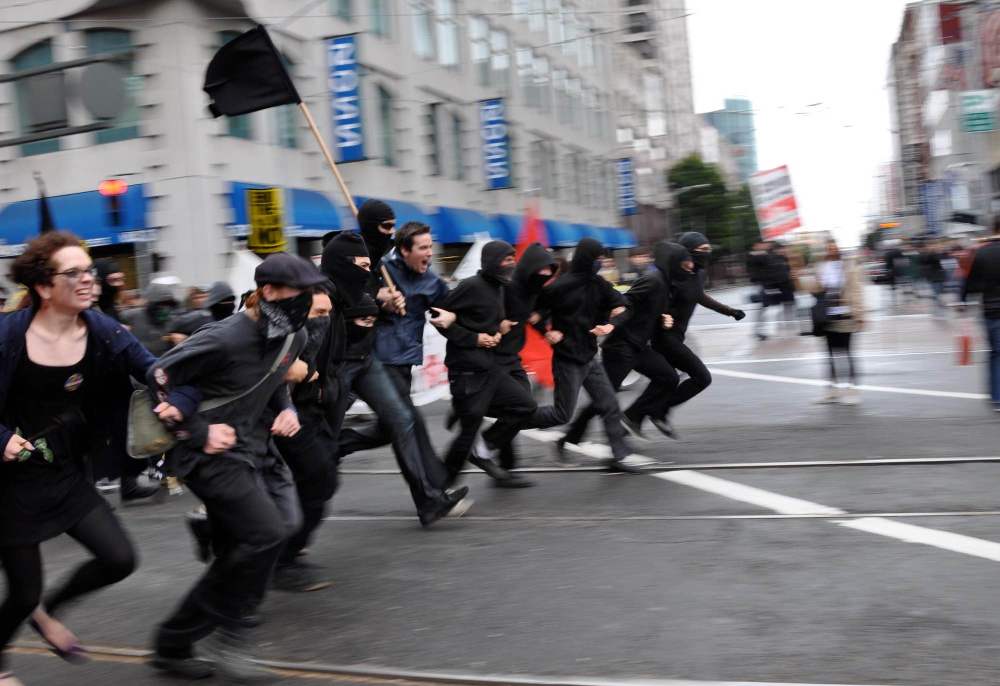
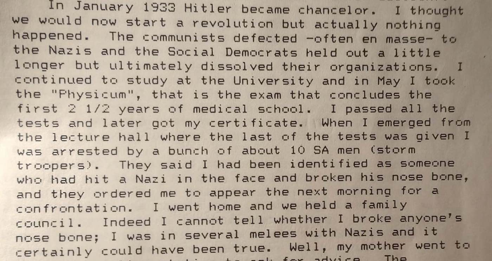
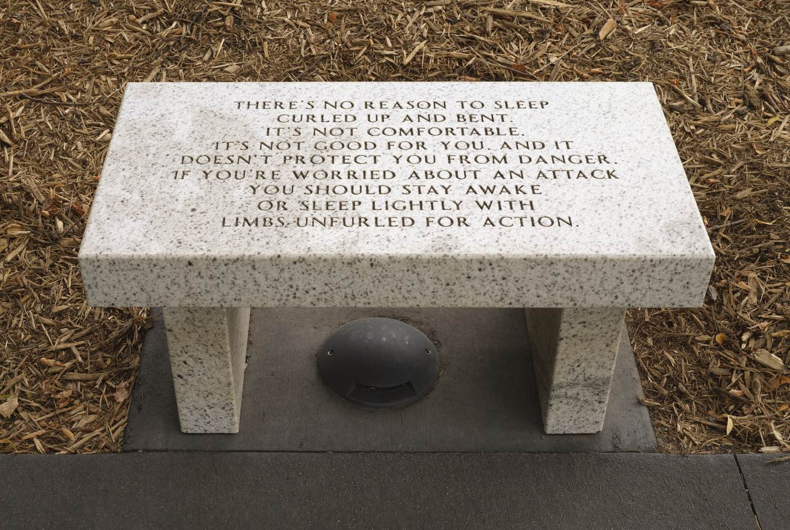
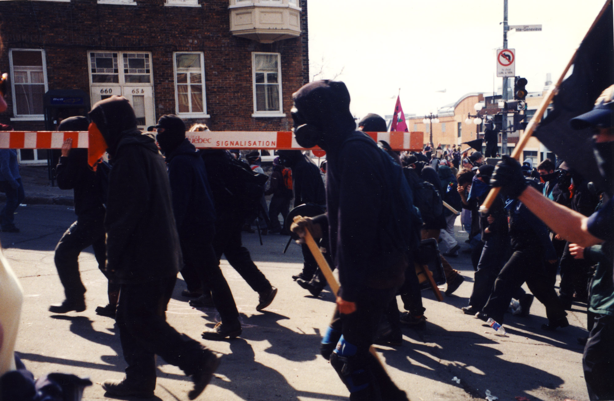
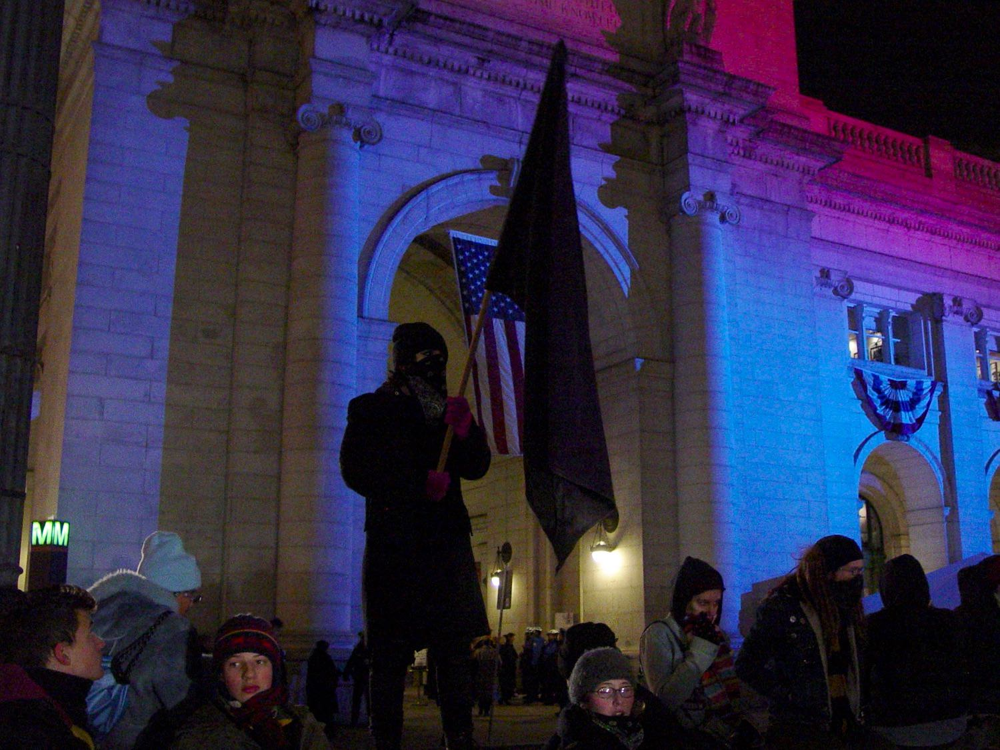
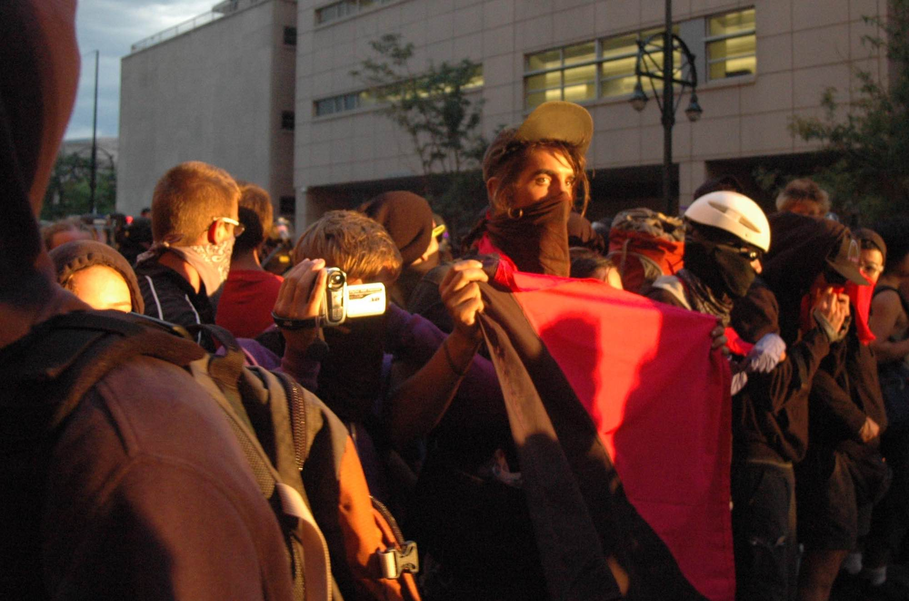
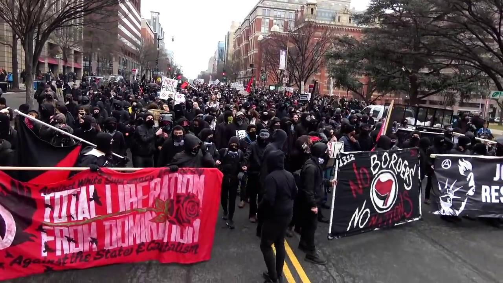
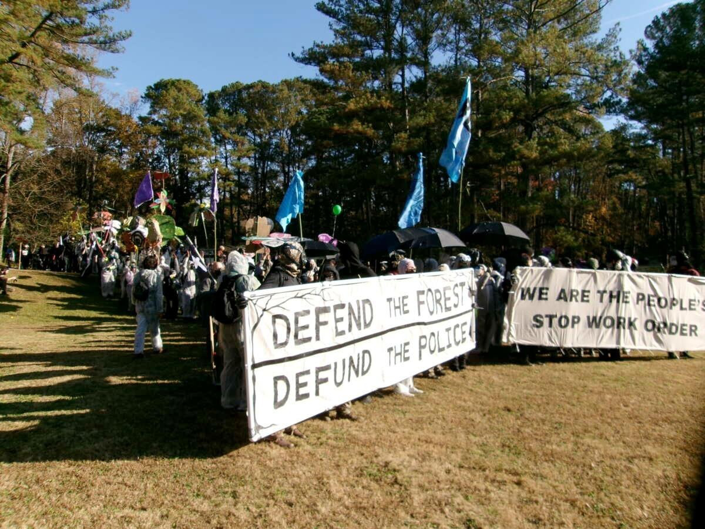
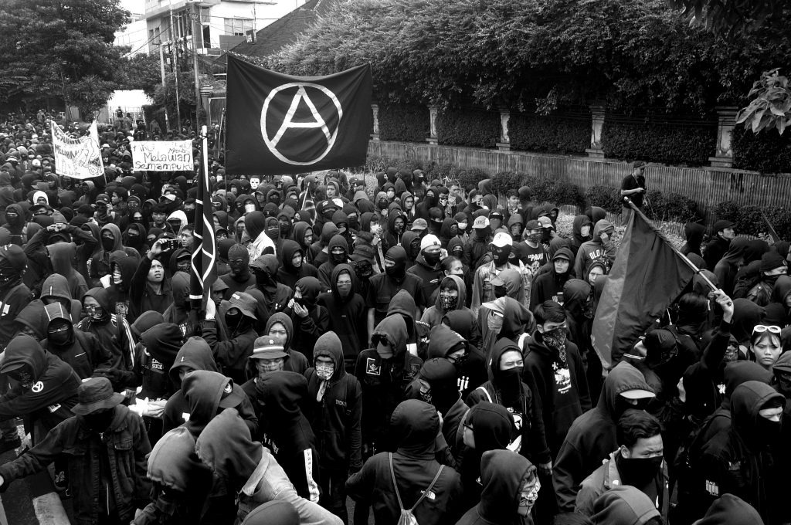
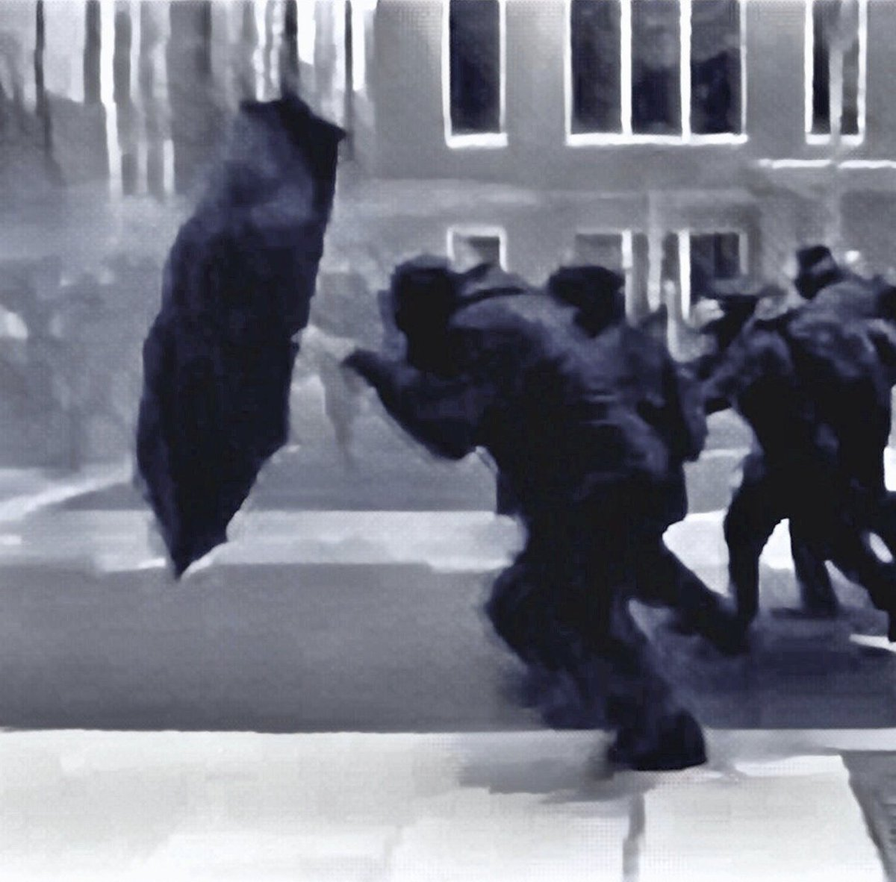

It's Safer in the Front
Taking the Offensive against Tyranny
Faced with intensifying repression and state violence, there is an understandable inclination to seek safety by avoiding confrontation. But this is not always the most effective strategy.
"Counterintuitive though it is, in a confusing situation, often the best, if not safest, place to be is the front lines, so you can get a clear visual grasp of what is going on around you."
-"What I Do for a Living," an account from the demonstrations against the 2003 European Union summit in Thessaloniki, published in Rolling Thunder #1.

My friend's grandfather grew up in Germany in the 1920s. Being Jewish, he got involved in radical organizations and sometimes engaged in physical altercations with Nazis. In a memoir that he recorded for his family decades later, he describes the situation when the Nazis took power:
"In January 1933, Hitler became chancellor. I thought we would now start a revolution, but actually nothing happened. The communists defected--often en masse--to the Nazis and the social democrats held out a little longer but ultimately dissolved their organizations."
In May 1933, when he was twenty years old, he learned that he was about to be prosecuted for having broken a Nazi's nose in a street brawl. Rather than face trial in a judicial system controlled by Nazis, he immediately obtained a passport and boarded a train for Holland that same night at 8 pm.
Some years later, the rest of his family died in the concentration camp in Auschwitz.
This story succinctly illustrates a surprisingly common phenomenon. Had my friend's grandfather not participated in open confrontations with Nazis from the very beginning, had he kept his head down and avoided trouble, he probably would have remained in Berlin and met the same fate as his relatives. By taking the offensive, he put himself in harm's way--but paradoxically, in the long run, that worked out better than playing it safe.
Likewise, participants in the guerrilla underground of the Jewish resistance were among the only ones to survive the Nazis' annihilation of the Jewish ghetto in Warsaw. In organizing to meet the Nazi threat head on, they developed a robust relationship to their agency, and this served them well when the only way out was to organize a daring escape from the besieged and burning ghetto through the sewer system.
For members of targeted groups, the initial impulse is often to withdraw, to go into hiding. Yet when it comes to both individual and collective self-preservation, it can be wiser to act assertively at the beginning, while it is still possible to influence the course of events. Even if this goes badly, it can be better to bring the conflict to a head immediately, before one's adversary becomes more powerful. If nothing else, this strategy has the virtue of making it impossible to lull oneself into a false sense of security while the threat increases.
It doesn't always work out this way, but sometimes, it's safer in the front.

"There's no reason to sleep curled up and bent. It's not comfortable, it's not good for you, and it doesn't protect you from danger. If you're worried about an attack, you should stay awake or sleep lightly with limbs unfurled for action." Artwork by Jenny Holzer.
It was noon on April 20, 2001. My comrades and I had assembled alongside hundreds of other anarchists and anti-capitalists at Laval University in Québec City to march on a transcontinental summit intended to establish a "Free Trade Area of the Americas." In the center of town, behind miles of protective fencing and thousands of riot police, George W. Bush and his fellow heads of state were plotting to override labor laws and environmental protections to enrich their patrons at our expense.
The sun was shining. More and more people were arriving at the departure point. One group even rolled up a catapult. The police were nowhere to be seen.
Still, I was anxious. Most of my experience of violence was subcultural--fighting skinheads, hardcore shows. I'd never taken on an army of police before. At a meeting the preceding evening, a local organizer had told us that it would be impossible to reach the fence around the summit--there were just too many cops with too much armor and weaponry.
As the crowd began to make its way out of the university towards the street, I consulted with a more experienced comrade. "Should we hang back and see what happens?" I asked.
"If we want to be able to see what's happening, we'll have to be in the front," he answered, matter-of-factly.
We marched directly to the fence surrounding the summit and tore it down. The police could not stop us. The "Free Trade Area of the Americas" was never ratified.

Anarchists marching on the so-called "Summit of the Americas" in Québec City, April 2001.
My friend's advice served me well four years later, on the day that George W. Bush began his second term. That night, following the daytime march against the inaugural ceremonies, a second march surged through the neighborhood of Adams Morgan, smashing banks and corporate businesses and attacking a police substation. Some participants dropped an enormous banner across a building façade reading "From DC to Iraq--with occupation comes resistance." We were attempting to compel the Bush regime to end the occupation of Iraq, which inflicted countless civilian casualties and later contributed to the catastrophic rise of the Islamic State.
As the march dispersed, a comrade and I found ourselves among a number of people walking through an alley. Ahead of us, police officers appeared at the exit.
We could have turned around and run the other direction. But then we would have been at the back of the crowd, unable to see what we were running towards. "Run, run forward," I said to my companion. We were already running.
We dashed past the cops just as they closed their line across the mouth of the alley. "Don't let any more of them out," I heard one bark to another.
We were the last ones to escape. The police had blocked the alley from the other side, as well. They forced the people behind us to kneel in the snow for hours. Years later, the detainees won a settlement from the city, but it was better to get away.

Washington, DC, January 20, 2005.
On August 25, 2008, in Denver, during the demonstrations against the Democratic National Convention, a couple hundred people gathered for a march that had been announced but never organized. We were still protesting against the ongoing occupation of Iraq and against capitalism in general.
Armored police were positioned in groups of a dozen each all around the park and the surrounding streets, outnumbering the young people sitting around with black sweatshirts in their laps. A vehicle was supposed to deliver banners, but a rumor reached us that police had detained the driver. Yet just when it seemed certain that nothing was going to happen, a few young folks pulled up their hoods and began chanting.
Who are these people? I recall wondering. What are they thinking, masking up and linking arms with hundreds of riot police surrounding them and undercovers at their elbows? What can they hope to accomplish?
Nonetheless, the other people who had gathered for the march regrouped with them and they began marching out of the park. They only made it as far as the road, where the nearest squadron of police formed a line blocking their path and showered them with pepper spray. No protest had occurred yet, I had heard no dispersal order, and already the police were using chemical weapons.
A comrade and I watched all this with dismay. There were still about two hundred of us, but the police were closing in from all sides and the crowd was disoriented and uncoordinated. It was a recipe for disaster.
We were at the back of the crowd. But the back can become the front--it's just a question of initiative. My comrade began shouting out a countdown. Others joined in, instinctively. Counting together concentrated our attention, our expectations, our sense of ourselves as a collective force capable of concerted action. And then thirty of us were sprinting over the grass away from the police line.
Seeing this, the rest of the crowd fell in behind. In a few seconds, hundreds of people were running across the park to the intersection at the far side of the lawn, where police had not gathered yet.
Now the energy in the air was electric, in contrast to the malaise and uncertainty of a moment earlier. We passed through the intersection, into which some enterprising young people pulled a municipal sign reading "Road Closed"--and suddenly, we were approaching the business district.
The same principle served us well later in the evening when we saw a line of riot police fanning out across an intersection a block ahead. Without pausing to confer, my comrade and I bolted towards them. We reached the line of police and dodged between them before they could block our path. They had orders to create a barrier, not to chase us. We were safe.

Denver, August 25, 2008.
On the morning of January 20, 2017, another comrade and I joined the march in downtown Washington, DC opposing the inauguration of Donald Trump. In the decades that had passed since Bush's second inauguration, police all around the country had militarized, receiving bigger and bigger budgets even as politicians claimed there was no money available for anything else. This time, the streets were crowded with 28,000 law enforcement personnel.
There was open conflict with the police as soon as the march got underway. The wail of police sirens, the deafening explosions of flash-bang grenades at close quarters, the acrid scent of pepper spray, the roar of police motorcycles, the sizzle of adrenaline--it was a terrifying situation, but the demonstrators around us were giving as good as they were getting. The idea was to set a template for resistance on the first day of the Trump administration, sending the message to everyone that no one should passively accept the intensification of tyranny.
The longer we were in the streets, the more dangerous it got. When we passed Franklin Square again, doubling back on our tracks, it was clear that it was only a matter of time before we were surrounded.
In downtown DC, between the intersections, the streets are like long stretches of canyon between the cliff faces of the buildings. I knew the police wanted to box us in and kettle us. Every time we passed through an intersection, I glanced at the intersections a block away on either side to see if police were shadowing us on the parallel streets, preparing to cut off our exit routes. Every time we moved out of an intersection into another stretch of canyon, I watched the intersections ahead and behind for police. Whenever we were moving between intersections, we were vulnerable.
As we approached 13th Street, police on motorcycles passed us on the sidewalk on our left, attempting to overtake us and seize the intersection ahead. We were still hundreds of feet from it. I urged my companion to run ahead with me, and we sprinted past front of the march, past the bike cops and motorcycle cops, who began ramming their vehicles into the people immediately behind us. When the cops saw that a few of us were already at their backs, they gave up trying to form a line and once again focused on racing ahead of us. Police hate to be outflanked--they can't risk being surrounded themselves.
The clash at the intersection showed that the march was no longer in control of the territory around it. It was time to make our exit. We ran down an alley on our right shortly before the next intersection. A hundred others did the same. Those who continued forward were blocked by a line of police at the next intersection, and turned around only to discover a much stronger police line blocking them from behind.
For two long minutes, the crowd paused in confusion and dismay. Some people towards the back of the march had already taken off their gear and were hoping to pass as civilians in order to make their way out of the area, not realizing that they were already trapped from all sides.
The participants at the front of the march kept their gear on and linked arms. Someone called out "We're going to do a countdown!" They counted down quickly from ten to one and charged directly at the police line ahead of them. The person at the very front of the charge held open a flimsy umbrella as they all ran blindly forward. Somehow, the umbrella protected them from the answering stream of pepper spray.
Fifty of them broke through the police line and escaped. The ones who lingered, waiting to see whether the charge would break through before joining it, remained trapped in the kettle.
Someone later posted a humorous comment on social media to the effect that the cheat code for the J20 Protest Simulator was to be always running at the cops holding a hammer. But there was something to it. Afterwards, watching police footage released to defendants in the subsequent court case, we saw that even after the police and National Guardsmen had tightened up their line, one enterprising individual had escaped simply by sprinting as fast as possible directly at them and ducking between two of them.
Everyone who was detained was charged with eight felonies apiece--up to eighty years in prison--for the crime of being mass-arrested in the vicinity of a rowdy march. A few took plea deals, but everyone else stuck together, establishing a collective defense plan and confronting the legal system head on. In the end, after two trials at which all the defendants were declared not guilty, all of the remaining defendants saw their charges dropped. Years later, all of them received payouts from the state to settle the resulting lawsuits.
It sounds like a metaphor, but I mean it literally as well as figuratively. Whether it's a march or a court case, sometimes it's safer in the front.

Washington, DC, January 20, 2017.
Several years later, I was in Atlanta for the Block Cop City mobilization. Protesters had been trying to stop the construction of a multi-million-dollar facility to further militarize the police. In retaliation, the police had murdered one person and arrested a large number of people at random, charging them with terrorism and indicting sixty-one of them on trumped-up racketeering charges.
Before the action proper, there were two days of deliberations at a local Quaker community center. Everyone was on edge. The goal was to try to march into the forest and occupy the construction site. Would we all be arrested? Would we, too, be charged with terrorism and racketeering? The discussions went in circles as people fruitlessly attempted to predict what would happen and negotiated their own risk tolerance.
It was decided that there would be three self-organized blocs within the march: essentially, the front, the middle, and the back. Officially, this distinction was not based on anticipated risk, because the organizers could make no promises about what the police would do. But no one was able to consider which bloc to join without panning back to larger questions. How much do I fear the violence of the police and the judicial system? What am I prepared to sacrifice for this movement?
Only the bold few who had made peace with their fears and committed to taking the front of the march seemed at ease. Even within the "middle" bloc, there was a lot of agonizing and bargaining going on. "I'll be in the middle, but not at the front of the middle..."
That night, I explained to my family what to do if I didn't come home from the demonstration. Both of my romantic partners, independently of each other, asked me whether it was really that important for me to participate in this particular march. Couldn't I just leave it to the younger activists?
It's safer in the front. I remembered this saying from earlier mobilizations--but thinking it over, I wasn't so sure. How could it be safer to charge directly into police lines? The slogan distilled lessons drawn on my own experience, but heading into yet another dangerous situation, I was dubious.
On the morning of the mobilization, we assembled at the park. Despite a few festive flourishes, the atmosphere was somber: a few hundred people risking injury, arrest, and prison time for the honor of an embattled movement. Many people had decided to stay home at the last minute. We marched out of the park in a column, everyone assiduously sticking to their particular position in the risk tolerance spectrum. As long as we were marching down the narrow pedestrian walkway, this made sense, but it made less sense when we emerged onto the main road and advanced towards the construction site. We should have fanned out to present a broad front as we approached the lines of police and armored vehicles blocking the road, but no, the crowd stretched out into what was almost single-file line, like lambs lining up for slaughter.
Nonetheless, the ones at the front picked up speed, forming a V-shaped wedge with their reinforced banners and pointing their umbrellas forward to block the cops' view as they charged directly into the shields of the skirmish line. The rest of us dragged along behind, holding the positions we had committed to holding--no less, and no more.

People assembling to begin the Block Cop City march, November 13, 2023.
The people with the reinforced banners pushed the first line of cops back until it was reinforced by a second line. Even then, they didn't relent; they kept on pushing forward against the police. The cops lashed out with their batons, but went on losing ground. The bloc at the front of the march stuck together, protecting each other, acting deliberately. Maybe they were afraid, but it wasn't fear that was determining their actions.
Looking on from behind them, I was terrified. I was grateful I wasn't in the front, having to make decisions. Police batons are scary, jail time is scary, felony charges are scary, but the truly frightening thing is responsibility. People will accept a lot of negative consequences in their lives just to avoid responsibility. And unfortunately, it's impossible: try as we might, there is no avoiding the fact that as long as we are able to make decisions and take action, we are responsible for ourselves. That is true whether you position yourself at the front or at the back, or even if you don't show up at all.
I watched the front-liners ahead of me push both lines of police back until they reached a third line comprised of futuristic stormtroopers. No sign of the stormtroopers' humanity was discernible beneath their military gear; not even their eyes were visible. They had withdrawn themselves from the human community completely.
The stormtroopers pulled out tear gas canisters. I watched in disbelief as they tossed the canisters one after another over the heads of the ones at the front into the middle of the march--into the midst of those of us who had hoped that others would run risks on our behalf, who had intended simply to be an appendage of others' agency. Perhaps it would have been safer in the front, after all?
Then everything vanished in a poisonous white haze.
We staggered blindly back in disarray, choking and coughing. But the stormtroopers had gassed the rest of the cops, as well, and the other cops were not wearing gas masks. They, too, had retreated. Against all odds, the battle concluded in a draw.
In the end, the only person who was arrested that entire day was someone who had opted to play a support role far from the site of the action. They were detained in a vehicle near the park from which we had set out. No one was charged with terrorism or racketeering.
In all our anxiety, we had forgotten the greatest risk of all: that we might do nothing, that we would let ourselves be cowed into abandoning the streets. With so many people already facing outlandish charges, marching on the construction site was a risky proposition--but permitting the state to crush the movement would have set a precedent that would threaten other movements, emboldening the authorities to use the same tactics elsewhere against many others like us.
Sometimes you can only find out what the risks are by taking a chance. This time, we had gotten lucky. But in a way, we had also passed a test.

Anarchists at the May Day demonstration in Bandung, 2019. Photograph by Frans Ari Prasetyo.
It's not really safer in the front. Staying home is safer--at least, it's safer until the long-term consequences of abandoning the streets set in. Then nowhere is safe, and it turns out it would have been better to take some smaller risks earlier on.
The anti-fascists who went to Charlottesville in August 2017 to confront the "Unite the Right" rally were putting themselves in harm's way. One of them was killed; several of them were severely injured. But if they had stayed home, if they had permitted fascists to establish control of the streets, the whole world would have become more dangerous. The likelihood that we may be forced to fight that same battle all over again today does not diminish the fact that they won us eight precious years of relative safety.
Even when all really is hopelessly lost, it is generally better to act boldly, sending a signal flare of hope across the generations, the way the Communards and the Kronstadt rebels did. In so doing, you at least preserve the possibility that others will be inspired to continue attempting to build the world you desire, so that one day, your dream might be realized--even if without you, at least due in part to your efforts.
But that's not where we are today. We face powerful adversaries, but the majority of people, including many of their supporters, have good reason to oppose them alongside us. If we bring people together, if we demonstrate effective ways to fight back, putting our own risk tolerance at the disposal of larger struggles, many more people will eventually join us. There's no reason to hasten into glorifying martyrdom or accepting defeat when the future is unwritten.
Not everyone can be in the front all the time, of course. It can be exhausting. But the front isn't a spatial location. Understood properly, it doesn't necessarily require a particular kind of physical ability or skillset. It's a way of engaging with events, of remaining focused on our agency, taking the initiative wherever we can rather than just reacting to our opponents' initiatives. Everyone can open up a new front of struggle by identifying a vulnerability in the ruling order and going on the offensive. The more fronts there are, the safer we all will be.
Facing the second administration of Donald Trump, many anarchists and anti-fascists don't know where to begin. During the previous Trump administration, we fought hard against an adversary that was much more powerful than us, and won--only to find victory snatched from our hands by cowardly Democrats, who eagerly took over where the Republicans left off, disappointing so many people that Trump was able to return to power. But that is no reason to give up, this time around--it just shows that all along, we were right about the nature of power, and we owe it to the world to demonstrate a real alternative.
In countries ruled by fascism or other forms of despotism, the majority of people do not necessarily support the authorities; they have simply become dispirited, accustomed to passivity. Much more so than liberals, anarchists are used to being outnumbered and outgunned, to fighting against incredible odds. While Democrats make excuses for the fascists or even embrace their agenda, we should demonstrate that it is possible to take ambitious, principled action to resist.
If you feel despair, if you feel defeated, if you catch yourself dissociating or focusing on what our oppressors are doing rather than on what you can do yourself--that is territory that the enemy has claimed within you.
Give them nothing without a fight. Stay focused on your agency. Every hour, every day, wherever you are positioned, there is always something you can do. Take care of yourself and those around you. Keep your eyes out for opportunities and seize them. We are in a fight--but it is a fight that we can win. It's safer in the front.

The umbrella charge on January 20, 2017.